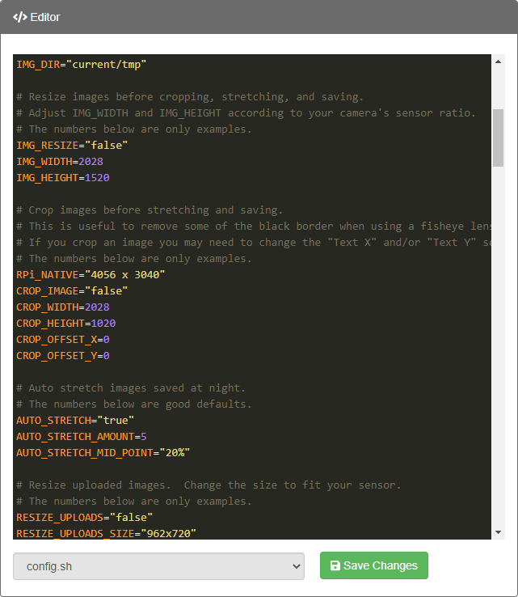
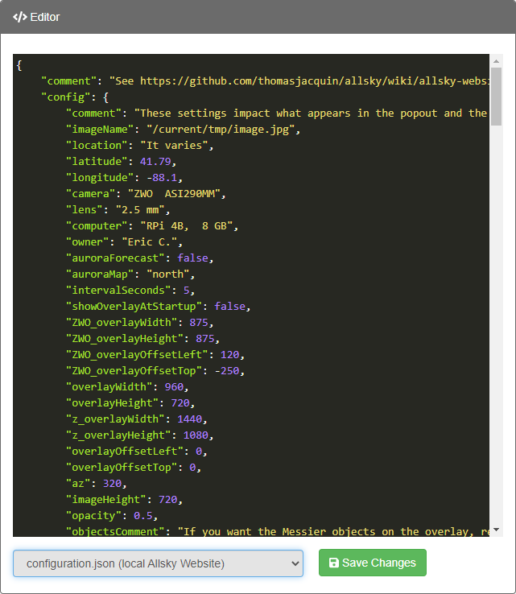

The WebUI's Editor page allows editing Allsky configuration files. Items in the editor window are color-coded depending on what they are.
HINT: The Editor accepts CTRL-Z to undo actions.
A typical view of a shell file being edited is below, followed by a typical JSON file. A description of the color scheme comes last.
Shell (.sh) Files

JSON (.json) Files

{kind=link}
Color Scheme
- Setting names look different depending on the file type:
- In
.shfiles the names look LIKE_THIS. By convention shell setting names (called shell "variables") are all uppercase and multi-word names are separated by an underscore ("_"), although there are some variables that don't follow that convention. - In
.jsonfiles they look likeThis. By convention if the name includes multiple words, the first letter of the first word is lowercase and subsequent word's first characters are Upper case. Settings names in the file MUST be enclosed in double quotes, but quotes are omitted in the Allsky documentation for readability.
- In
- Settings value colors are the same in both file types but
vary based on the type of value:
- Text (anything surrounded by quotes): "sample text", "123.4". Note that a number surrounded by quotes is actually a string, e.g., "123.4". Numbers-as-strings may work in some cases, but when entering a number it's safest to NOT use quotes.
- Numbers (when not quoted): 1.234, -21,
- Booleans (when not quoted): true, false. Note that in shell files these values are usually quoted, which means they are strings, not booleans. The shell has no boolean type, unlike JSON and many newer programming languages which do.
- Special characters: { } : , =
- JSON brackets: [ ]
- Shell comments: # This is a shell comment
- Many reserved words and common commands in shell scripts like "if" and "sudo" have special colors.
Debugging
If you see different colors while editing a file, check for syntax errors:- Missing commas - in JSON files they are needed after each value
except the last one in a sub-section.
Missing commas is the most common syntax error. - Missing quotes - JSON setting names and string values must be surrounded by double quotes, as should Shell strings that contain a space, tab, or special character.
- Missing colons - one must separate each JSON setting name from its value. There can be 0 or more spaces before and/or after the colon.
- Extraneous spaces - in Shell files there should be no space between a variable name and the "=".